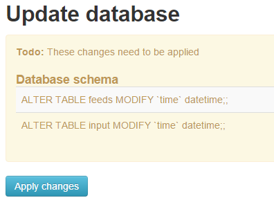

This first page will get updated on every release with details.
- See this page also for general discussions around v8.6 - 9.0 development.
- v9 Virtual Feeds explanation.
- See Creating Widgets Module SDK
Very last version may not be on main repo, get it here:
(zip name is the same but contents changes to latest)
https://github.com/chaveiro/emoncms/archive/master.zip
Limitations
- Low-write mode not available for PHPFIWA. Disable the engine in the config if using this mode.
TODO (later)
- Review or implement bulk writes for PHPFIWA
- Update all other graphs (Already on Multigraph, Realtime, Smoothie, Zoom) to use async calls.
Change log
9.4 | 2016.03.15
- MYSQL port number user configurable to make possible for custom setups e.g. Docker
- Add support for generation of kWh/d from accumulating kWh for all daily kwh type visualisations
- Daily data editor fixes: now works with phptimeseries data & ability to edit historical days without affecting current days
- Add 'smoothing' option to data viewer
- Increase accuracy of power > kWh process by using double instead of float data type
- Improved terminal style auto updating logfile viewer and responsive emonpi updater
9.31 | 2016.02.13
- Multigraph hidden series toggle refactoring
- New MQTT input (beta)
- Fix PHPTimeSeries
- Fix remember me
9.3
- Added:
- Flot toggle module added to multigraph and timecompare visualizations.
- Input and Feed list grouped details
- Export grouped by tag
- Export excel timestamp format
- Event process module
- Merge of :
- Multigraph series toggle.
- Multigraph hide tag.
- Documentation updates
- Bugfixing: export and password length
- Removed: optional modules from core: dashboard, device
9.2
- Bugfixing on export virtual feeds data.
- Add min value and UI improvements on jgauge.
- Fix device module while using redis.
- Allow export in excel d/m/Y h:i:s format in user timezone.
- Added new Windrose and jgauge2 widgets.
- Added min value support to jgauge and jgauge2 widgets.
- Bugfixing process and device module.
- Preparation for eventProcess module.
- Hide/alert processes that require redis when redis is not installed.
- Bug fix on virtual feeds last time update
- Added device module
- Merge docs
- Merged contibuted fixes: tooltip and input.js
9.1
- Fix KW/h decrease on emoncms update.
- Fix DST change duplicating days in daily bar graph.
- Changed validation logic for $max_node_id_limit config setting, from node id numeric to maximal number of different nodeids. A node id can be a string now.
- Added Lib swiftmailer and a generic email helper class to core for sending emails.
- Added 5 new processors for virtual source feed : + - * / and 1/ 'source feed'
- Added support for devicekey instead of apikey, if using device module. A device key only allows posting to the device configured node.
- DST change fix for KWh processors.
9.0 RC2
- Add new widget : dewpoint.
- Clean now unsupported functions feed->get by name.
- Added support for Process List Modules.
9.0 RC
- Fix feeds and inputs not showing, due to UTF8 regex omitting user data after save.
- Merge of:
- UTF8 support
- Browser asks for remember user and password
- Spanish translation
- Removed dependency on dashboard widgets (3rd button on editor) of feed names, use feed id instead. Will break existing user dashboards. Need to edit dashboard and choose feeds again.
- Validate node id on input.
- Fix api documentation
- Fix mysql csv export
- Fix new instalation allow user to register
- Fix remember me.
- Asks for login when needed.
- Add support for apikey in "Authorization: Bearer " http header per rfc6750.
- Added support for redis port and auth.
- Fix mqtt_input.php script.
9.0 preview
- Show login button on small screens
- Added PHPTIMESERIES buffer writing.
- Show published dashboards as menu items (star icon).
- Hides published dashboards on <480px and menu-extra, menu-right on < 320px.
- Highlight current page on menu.
- Added dashboard description to menu collapsed and mouse over icon.
- New setting $menucollapses.
- Double click collapses all grouped table elements.
8.6.0 beta | for testers only
- Refactoring menu icons code.
- JS cleans on vis modules.
- Update Zoom vis to use async calls.
- HTTP 406 error returned if no controller found.
- Fix dashboard edit issue
- Spelling fixes
- Added buffer status in admin server info.
- Minor speed improvements on REDISBUFFER.
- Updated delete input now if has no values and updated +15m.
- Menu iconify
- Dashboard clone fix
- Fix user profile page ui
- Fullscreen Ui fix.
- Dashboard save status messages.
- Updated REDISBUFFER to read feed buffer and merge that data with saved feeds data so latest data is always displayed independent of buffer length.
8.6.0 Alpha | for testers only
- Virtual feed engine now passes value to next processlist slot.
- Improved looks on all pages in full width and process list editor is now modal
- Better update time calculation on feeds and input list.
- Fix bugs reported on this thread to date.
- Added low-write mode for PHPFINA.
- Updated REDISBUFFER engine with buffer read/write locks so updates dont get erased.
- Updated script/feedwriter.php to stable version for low-write daemon
- Modularized input processlist code to a new module in Module/process.
- Added a new engine type 'VIRTUAL' that calculates values on demand evaluated from a processlist for existing data feeds. Available from Feeds menu.
- Added a new engine type 'MEMORY', mysql with MEMORY tables. Data is held in RAM and lost on shutdown. Usefull for realtime data and benchmarking tests.
- Added a new engine type 'REDISBUFFER', this is an internal engine used from feed_model.php to deal will all redis low-write buffer logic.
- Added auto-load instances of engine classes only when needed in feed_model.php. Fast execution and less memory used.
- Updated MYSQL engine to support efficient bulk writes if low-write mode is active (post_bulk_prepare and post_bulk_save).
- Updated feed list to support virtual feeds with process list.
- Updated process module code to work in feed context for virtual feeds.
- Updated folder structure of vis module to use the standard folders names ./Views and ./visualization/[vis_folder_js_files].
- Updated vis widgets Multigraph, Realtime and Smoothie to use async calls with gpu adaptive refresh rate, more responsive.
- Updated all simple widgets (from dashboard module) to use gpu adaptive refresh rate, more responsive.
- Changed dashboards iframes urls to be relative. Will allow accessing local server behind a NAT from the internet without broken dashboards. Changes are applied on next dashboard save.
- Cleaned superfluous non text comments on some js files to lower download size.
- Updated log engine, removed dependency of log4php, use php native file writer.
- New config vars: redis_server, mqtt_server, allow_emonpi_update, log_enabled, log_filename, data_sampling (experimental, see settings.php), redisbuffer['enabled'] (for low-write mode)
- Added Admin menu Server Information, Logs viewer and redis flush.
Re: EmonCMS 9.31 | 2016.02.13 released
Did you update your 'emoncms' database when you updated to v9?
The way that emoncms name's it's feeds changed in v9 and I'm wondering if the script failed because it couldn't find the source feed?
If you did update your database, I'm surprised that you are able to roll-back....
Paul
Re: EmonCMS 9.31 | 2016.02.13 released
Hi Paul,
Yes I updated the database but I'm using a virtual machine which I can roll back using a snapshot. Before upgrading to 9.x I upgraded php from 5.2 to 5.6. Following your previous suggestion I tried creating a new feed but receive the following error:
ERROR: Feed could not be created, undefined
Which I'm sure is very related. Interestingly the feed is created although it is never updated. I'll find the cause of that issue and I'm sure the upgrade will work correctly after that.
Thanks for your help and I'm very sorry this it appears to be caused by an external factor.
Kev
Re: EmonCMS 9.31 | 2016.02.13 released
btw as i prep to install emoncms i read the guide.... did i miss something or where do i free up the serial port?
Re: EmonCMS 9.31 | 2016.02.13 released
G'day team -
I just wanted to raise two bugs that I have found with this version (they may have been in previous versions two)... they both specifically relate to the mysolarpv app, but may be applicable to the other apps as well..
Cheers,
M
Re: EmonCMS 9.31 | 2016.02.13 released
decided to stay on wheezy and followed this guide: https://github.com/emoncms/emoncms/tree/9.0/docs/RaspberryPi
stuck at this step:
git clone https://github.com/emonhub/dev-emonhub.git ~/dev-emonhub && ~/dev-emonhub/install
even tried to put sudo in front of it but i get this on the screen:
usage: emonhub.py [-h] [--config-file CONFIG_FILE] [--logfile LOGFILE]
[--show-settings] [--version]
emonhub.py: error: argument --logfile: can't open '/var/log/emonhub/emonhub.log': [Errno 13] Permission denied: '/var/log/emonhub/emonhub.log'
is that normal?
before this i got:
sudo git clone https://github.com/emonhub/dev-emonhub.git ~/dev-emonhub && ~/dev-emonhub/install
Cloning into '/home/pi/dev-emonhub'...
remote: Counting objects: 98, done.
remote: Total 98 (delta 0), reused 0 (delta 0), pack-reused 98
Unpacking objects: 100% (98/98), done.
Cloning into '/home/pi/emonhub'...
remote: Counting objects: 1042, done.
remote: Total 1042 (delta 0), reused 0 (delta 0), pack-reused 1042
Receiving objects: 100% (1042/1042), 254.11 KiB | 244 KiB/s, done.
Resolving deltas: 100% (636/636), done.
Already on 'development'
update-rc.d: using dependency based boot sequencing
Reading package lists... Done
Building dependency tree
Reading state information... Done
python-configobj is already the newest version.
python-serial is already the newest version.
0 upgraded, 0 newly installed, 0 to remove and 81 not upgraded.
useradd: user 'emonhub' already exists
[ ok ] Restarting OpenEnergyMonitor emonHub: emonhub has been restarted ok.
so i guess the install was ok
but why that error?
last of log said:
2015-11-20 11:05:20.917|ERROR|index.php|Invalid API key '4b8af356245e368cb44fc5727db0736a' 2015-11-20 11:06:10.513|ERROR|index.php|Invalid API key '4b8af356245e368cb44fc5727db0736a' 2015-11-20 11:14:10.169|ERROR|index.php|Invalid API key '4b8af356245e368cb44fc5727db0736a' 2015-11-20 11:18:10.329|ERROR|index.php|Invalid API key '4b8af356245e368cb44fc5727db0736a' 2015-11-20 11:22:10.170|ERROR|index.php|Invalid API key '4b8af356245e368cb44fc5727db0736a' 2015-11-20 11:26:10.300|ERROR|index.php|Invalid API key '4b8af356245e368cb44fc5727db0736a' 2015-11-20 11:30:16.876|ERROR|index.php|Invalid API key '4b8af356245e368cb44fc5727db0736a' 2015-11-20 11:32:10.119|ERROR|index.php|Invalid API key '4b8af356245e368cb44fc5727db0736a' 2015-11-20 11:34:10.239|ERROR|index.php|Invalid API key '4b8af356245e368cb44fc5727db0736a' 2015-11-20 11:38:10.480|ERROR|index.php|Invalid API key '4b8af356245e368cb44fc5727db0736a' 2015-11-20 11:46:10.313|ERROR|index.php|Invalid API key '4b8af356245e368cb44fc5727db0736a' 2015-11-20 11:47:10.279|ERROR|index.php|Invalid API key '4b8af356245e368cb44fc5727db0736a' 2015-11-20 11:50:20.879|ERROR|index.php|Invalid API key '4b8af356245e368cb44fc5727db0736a' 2015-11-20 11:52:10.206|ERROR|index.php|Invalid API key '4b8af356245e368cb44fc5727db0736a' 2015-11-20 11:54:10.601|ERROR|index.php|Invalid API key '4b8af356245e368cb44fc5727db0736a' 2015-11-20 11:58:10.272|ERROR|index.php|Invalid API key '4b8af356245e368cb44fc5727db0736a' 2015-11-20 12:02:10.291|ERROR|index.php|Invalid API key '4b8af356245e368cb44fc5727db0736a' 2015-11-20 12:06:10.590|ERROR|index.php|Invalid API key '4b8af356245e368cb44fc5727db0736a' 2015-11-20 12:10:21.133|ERROR|index.php|Invalid API key '4b8af356245e368cb44fc5727db0736a' 2015-11-20 12:14:10.280|ERROR|index.php|Invalid API key '4b8af356245e368cb44fc5727db0736a' 2015-11-20 12:18:10.312|ERROR|index.php|Invalid API key '4b8af356245e368cb44fc5727db0736a' 2015-11-20 12:22:10.347|ERROR|index.php|Invalid API key '4b8af356245e368cb44fc5727db0736a' 2015-11-20 12:26:10.522|ERROR|index.php|Invalid API key '4b8af356245e368cb44fc5727db0736a' 2015-11-20 12:27:10.196|ERROR|index.php|Invalid API key '4b8af356245e368cb44fc5727db0736a' 2015-11-20 12:30:22.616|ERROR|index.php|Invalid API key '4b8af356245e368cb44fc5727db0736a'
but i have just edited the hub conf file so it might be the last time that one shows up
nope it keeps going on... hmmm why does it say that the key is invalid? i copy&pasted it from the admin interface
just checked.... that api key is not even the one that is in the config and admin..... very odd
Re: EmonCMS 9.31 | 2016.02.13 released
Try reloading the emonhub config:
Paul
Re: EmonCMS 9.31 | 2016.02.13 released
did that a few times...
loads and then a few sec after the same error pops up
will recheck but moving root fs to hdd as there is not enough room for my old data
the invalid api key was data comming in from a remote location i forgot... once i added the user back from backup it was ok
Re: EmonCMS 9.31 | 2016.02.13 released
got stuff moved.... checked the config once more...
pi@GPS-raspi ~ $ sudo service emonhub restart
[ ok ] Restarting OpenEnergyMonitor emonHub: emonhub has been restarted ok.
pi@GPS-raspi ~ $ usage: emonhub.py [-h] [--config-file CONFIG_FILE] [--logfile LOGFILE]
[--show-settings] [--version]
emonhub.py: error: argument --logfile: can't open '/var/log/emonhub/emonhub.log': [Errno 13] Permission denied: '/var/log/emonhub/emonhub.log'
Re: EmonCMS 9.31 | 2016.02.13 released
are there any files i could post copy off that might help solve the thing?
but emonhub is not running... i guess that its because it fails access on that log file...
the log file is not mentioned in the guide so have no clue what access permissions should be set
EDIT: when thinking of it next version of emoncms should have an config section for Emonhub... so almost every setting is done from emoncms and also something that checks the permissions on the emonhub log file like there is for the emoncms log file
EDIT2.... since emonhub is not running i guess that also the reason for API writes dont get through
EDIT3.. for some reason i cant edit my old dashboard the i imported via mysql... also dials do not show up, but graphs does and also show the old data. if i create a new dashboard i cant insert anything...
Re: EmonCMS 9.31 | 2016.02.13 released
i wonder what permissions there should be on /var/log/emonhub/emonhub.log ?
EDIT: chmod 777 did the trick... now emonhub can run and data comes in again
but dashboard is still not good
EDIT2: emonhub.log shows:
2015-11-20 22:21:11,796 INFO EmonHub Pre-Release Development Version (rc1.2)
2015-11-20 22:21:11,801 INFO Opening hub...
but data comes through, thou it might sometimes take a restart or 2
if i use the api method to feed stuff like weather data that fails...
EDIT3: i have changed the max node id setting from 32 to 3200... my weather and solar import uses id 100 and 200
Re: EmonCMS 9.31 | 2016.02.13 released
EDIT2: emonhub.log shows:
2015-11-20 22:21:11,796 INFO EmonHub Pre-Release Development Version (rc1.2)
2015-11-20 22:21:11,801 INFO Opening hub...
What did you expect it to display?
Paul
Re: EmonCMS 9.31 | 2016.02.13 released
i forgot to incude what was above those lines:
2015-11-20 22:06:07,205 INFO EmonHub Pre-Release Development Version (rc1.2)
2015-11-20 22:06:07,226 INFO Opening hub...
2015-11-20 22:06:13,270 WARNING Device communication error - check settings
2015-11-20 22:07:39,377 WARNING emonCMS couldn't send to server, Exception: Traceback (most recent call last):
File "/home/pi/emonhub/src/emonhub_reporter.py", line 227, in _send_post
response = urllib2.urlopen(request, timeout=60)
File "/usr/lib/python2.7/urllib2.py", line 127, in urlopen
return _opener.open(url, data, timeout)
File "/usr/lib/python2.7/urllib2.py", line 401, in open
response = self._open(req, data)
File "/usr/lib/python2.7/urllib2.py", line 419, in _open
'_open', req)
File "/usr/lib/python2.7/urllib2.py", line 379, in _call_chain
result = func(*args)
File "/usr/lib/python2.7/urllib2.py", line 1211, in http_open
return self.do_open(httplib.HTTPConnection, req)
File "/usr/lib/python2.7/urllib2.py", line 1184, in do_open
r = h.getresponse(buffering=True)
File "/usr/lib/python2.7/httplib.py", line 1034, in getresponse
response.begin()
File "/usr/lib/python2.7/httplib.py", line 407, in begin
version, status, reason = self._read_status()
File "/usr/lib/python2.7/httplib.py", line 365, in _read_status
line = self.fp.readline()
File "/usr/lib/python2.7/socket.py", line 447, in readline
data = self._sock.recv(self._rbufsize)
timeout: timed out
2015-11-20 22:07:39,390 WARNING emonCMS send failure: wanted 'ok' but got ''
2015-11-20 22:08:39,712 WARNING emonCMS couldn't send to server, Exception: Traceback (most recent call last):
File "/home/pi/emonhub/src/emonhub_reporter.py", line 227, in _send_post
response = urllib2.urlopen(request, timeout=60)
File "/usr/lib/python2.7/urllib2.py", line 127, in urlopen
return _opener.open(url, data, timeout)
File "/usr/lib/python2.7/urllib2.py", line 401, in open
response = self._open(req, data)
File "/usr/lib/python2.7/urllib2.py", line 419, in _open
'_open', req)
File "/usr/lib/python2.7/urllib2.py", line 379, in _call_chain
result = func(*args)
File "/usr/lib/python2.7/urllib2.py", line 1211, in http_open
return self.do_open(httplib.HTTPConnection, req)
File "/usr/lib/python2.7/urllib2.py", line 1184, in do_open
r = h.getresponse(buffering=True)
File "/usr/lib/python2.7/httplib.py", line 1034, in getresponse
response.begin()
File "/usr/lib/python2.7/httplib.py", line 407, in begin
version, status, reason = self._read_status()
File "/usr/lib/python2.7/httplib.py", line 365, in _read_status
line = self.fp.readline()
File "/usr/lib/python2.7/socket.py", line 447, in readline
data = self._sock.recv(self._rbufsize)
timeout: timed out
2015-11-20 22:08:39,728 WARNING emonCMS send failure: wanted 'ok' but got ''
2015-11-20 22:14:29,561 INFO EmonHub Pre-Release Development Version (rc1.2)
2015-11-20 22:14:29,565 INFO Opening hub...
2015-11-20 22:14:33,696 WARNING Device communication error - check settings
2015-11-20 22:16:48,908 INFO EmonHub Pre-Release Development Version (rc1.2)
2015-11-20 22:16:48,923 INFO Opening hub...
2015-11-20 22:16:53,097 WARNING Device communication error - check settings
2015-11-20 22:21:11,796 INFO EmonHub Pre-Release Development Version (rc1.2)
2015-11-20 22:21:11,801 INFO Opening hub...
EDIT: has the api format changed since v8 ? this is what i do to import weather data:
$url = 'http://127.0.0.1/emoncms/api/post?apikey=*******&node=10&json={humidity:' . $relative_humidity . ',pressure:' . $pressure_mb . ',wind:' . $wind_kph . ',temp:' . $temp_c .'}';
EDIT2: and where did the dials etc go on the dashboard? i even created a new one and could not even insert text.... database is updated...
Re: EmonCMS 9.31 | 2016.02.13 released
If I'm not completely mistaken, yes this api will not be used anymore. I think I read it somewhere here in the forum.
The way how the dials are getting their data has changed in 9.0+. So you need to relate them again to the feeds. I had to do that on 89 dashboards. Was a little bit annoying :-) And not all have been changed so far so you can expect to do that for the others too when they have been updated. Using the feedid instead of the feedname is far better from my point of view. It's worth changing that.
edit: I scrolled through the first page of this thread and found an entry submitted by dockarl on Fri, 23/10/2015 - 20:49.
It sounded similar to your issue and it was somehow still in my mind. Maybe this helps?
Re: EmonCMS 9.31 | 2016.02.13 released
hmm... if you have a link to the replacement of the API it would be nice
about the dials... my problem is that i cant even make a new dashboard and place text
will look at the other post after breakfast
Re: EmonCMS 9.31 | 2016.02.13 released
my import scripts fixed.... just replace /api/ with /input/
Re: EmonCMS 9.31 | 2016.02.13 released
Can you use Chrome and then use the F12 button to show up the developer tools?
Try creating a dashboard and look on the console log on the right bottom. Maybe it shows you an error message which can help to diagnose the issue.
For sure I know it needs to add some columns to the existing dashboard table to store the dashboard background color etc. Maybe something is missing but the update & check mechanism does not recognize that something is missing.
Try create a new db and a new copy of emon 9.x. If this is working you can copy over the data (not structure etc.) to the new db and check if it is still working. I also had some issues not be able to create feeds. This step solved it for me.
Re: EmonCMS 9.31 | 2016.02.13 released
i can create feeds, no issue there
also i can create a new dashboard, but i cant put anything on it... and i have hit update DB a lot without fixing it.
will try F12... lucky chrome is my religion :-D
Re: EmonCMS 9.31 | 2016.02.13 released
http://imgur.com/mv3oJ2o
so an error i assume, but no idea whats wrong
what i did for dashboards was importing the mysql table from the old database, just so i did not had to redraw the whole thing again
strange thing is that the graphs i used show up, but not the dials, cant remember which type it was, most likely the once that can go from green to red etc
EDIT: phpmyadmin is making a copy of the database right now... takes some time as each table is about 50MB
Re: EmonCMS 9.31 | 2016.02.13 released
The graphs have not been updated till now, only the dials ;-) That's why they are working.
One thing I see: Is there a specific reason why you are using 9.0RC2? Chaveiro has put up a 9.0x which is now 9.1 at the moment. Maybe you are missing quite some bugfixes because of that "older" version of it. I suggest to uses the actual one from here: https://github.com/chaveiro/emoncms/archive/9.x.zip
Maybe this solves some issues too as I can remember there were quiet some bugs in the dashboard area in the older versions.
Re: EmonCMS 9.31 | 2016.02.13 released
9.0 is the official release version, 9.x is the development branch which may not be suitable for all users.
Paul
Re: EmonCMS 9.31 | 2016.02.13 released
"9.0 is the official release version, 9.x is the development branch which may not be suitable for all users."
So that is why the dials are not working in my case? everything else works
except emonhub... sometimes it starts ok, other times it starts with the errors i showed a few steps up, in which case i have to do a restart until it starts ok
but can i go back and forth between the version and see how it works for me? ie without touching the database
Re: EmonCMS 9.31 | 2016.02.13 released
"The graphs have not been updated till now, only the dials ;-) That's why they are working."
in my case its the other way round... graphs are working... NOT the dials
about the versions.... can it be true that i cant even make a new empty dashboard and put a simple text on it?
tried to empty the database and start over.... same thing... cant create a dashboard
Re: EmonCMS 9.31 | 2016.02.13 released
Bo
"2015-11-20 22:06:13,270 WARNING Device communication error - check settings"
Have you defined the baud of the RFM2Pi in emonhub.conf? the intermittent starting of emonhub may be due to the serial baud auto-detection, it is known to be a bit hit and miss with certain rfm2pi firmwares.
"emonhub.py: error: argument --logfile: can't open '/var/log/emonhub/emonhub.log': [Errno 13] Permission denied: "
The install log for emonhub you provided clearly shows it was not the first time you run it, I have no idea what the consequence could be of running the script multiple times, But I suspect the reason for the emonhub.log permission issues are due to trying at least once to run the install as root using sudo, that will have cloned the repo with different permissions and that has caused an issue.
"WARNING emonCMS couldn't send to server, Exception: Traceback (most recent call last):........."
I have no idea what the root cause of these messages is, other than it is the response from emoncms seen by emonhub, for emonhub to be able to deliver data, emoncms must be error free unless you set $display_errors = false; in emoncms settings.php.
Also you can IF emonhub is functioning correctly and trying to post data correctly by setting "loglevel = DEBUG" in emonhub.conf.
Paul
Re: EmonCMS 9.31 | 2016.02.13 released
how is baud defined??
problem with the log file for emonhub is that nowhere in the install guide it says what permissions it should have... once i set 777 it runs fine
as it is now i only have 2 issues
Re: EmonCMS 9.31 | 2016.02.13 released
No, the graphs are using still the old way on how to get the feed data thats why they work with the old existing dashboards. The Dials are already using the new way and are therefore not working with the existing dashboards as there the feedname is expected and not an ID. :-)
I would give 9.x a try. i'm using it too and its working for me.
If a newly installed emoncms and newly created schema in mysql will not allow you to create a dashboard we have to analyze your environment maybe :-)
Re: EmonCMS 9.31 | 2016.02.13 released
as it is now i only have 3 issues
Re: EmonCMS 9.31 | 2016.02.13 released
"how is baud defined??"
In emonhub.conf [interfacers] [[RFM2Pi]] [[[init_settings]]] com_baud = ???, the value will depend on the firmware installed on your rfm2pi, it will be 57600, 39400 or 9600.
"problem with the log file for emonhub is that nowhere in the install guide it says what permissions it should have... once i set 777 it runs fine"
There has never been a need for it before. Tthe log file and it's folder are (usually) created by the emonhub init script if they do not exist (this is done at every start to work with read-only installs to), I assume the problems you have are due to not using the installer as intended and since the file already exists but the permissions are not checked, the init script does not work as intended.
Paul
Re: EmonCMS 9.31 | 2016.02.13 released
as for the log - just followed the install guide
will change emonhub settings to inlude baud
Re: EmonCMS 9.31 | 2016.02.13 released
as for my dashboard... my idea was to click the dials and edit them and give then the feedname instead of the id
but it seems that i have to change to 9.X to be able to even create a dashboard in the first place
can i via git change version so i dont have to do setup from scratch?
Edit: got all my feeds sorted vis some witchcraft in phpmyadmin, so now i just need to do the dashboard
Re: EmonCMS 9.31 | 2016.02.13 released
i want to give the 9.x branch a go... i assume there is no trouble with 2 dirs with emoncms
but how would i force this command to install in to a certain dir?
cd /var/www && git clone https://github.com/emoncms/emoncms.git
if not much mistaken this is the same command for both 9.0 and 9.x ?
i looked at both install guides and i cant see any difference....
my thought was to put 9.x in a dir called emoncms2 hence able to keep them as much seperated as i can
Re: EmonCMS 9.31 | 2016.02.13 released
If you install v9.x it will make changes to your MYSQL database, which may cause issues if you decide to go back to 9.0.
There are discussions taking place between the OEM team about changing the branches and it appears at this time that 9.0 will remain as the default installation version, whilst a new branch (as yet unnamed will concentrate on development).
v9.x may of course be merged into 9.0 beforehand, but T&G are still looking at options.
Also, especially as you have struggled with so many problems so far, I would stay on 9.0.
But it's your choice!!
Paul
Re: EmonCMS 9.31 | 2016.02.13 released
If you want to test it then also create a new db schema for it. Test a clean install and when everything is working you can copy over your data from the other db.
That's how I did it with my move from 8.4 to 9.1. If you want to be extra save also make a copy of your data folder. If everything is working you can simply rename the folder name of emoncms and everything is as normally.
Sill, if you also have problems with 9.1 then you have definitely something going wrong on your environement.
@ Paul
Are you sure with that DB changes? I also used 9.0rc2 and can remember that it also changed a lot on the DB side. Of course I was using an older version (8.4) and this could be a reason. Is it not more likely that there are no changes when coming from 8.5?
Re: EmonCMS 9.31 | 2016.02.13 released
hehe
the problem is i dont have a dashbaoard.... nor can i create one...
a small downer as we call it here :-(
EDIT: i downloaded the zip with 9.x in to a seperate dir and now doing a DB backup....
in worst case i can just delete the new dir and revert any changes to the DB
Re: EmonCMS 9.31 | 2016.02.13 released
@Andi, Bo is already on v9.0 having updated from 8.5 and is considering changing again to v9.x
I believe that the below screenshot is the database difference between v9.0 & v9.x
The difference between the two branches is this.
Just tried on my test Pi.

Paul
Re: EmonCMS 9.31 | 2016.02.13 released
i tried to load 9.x in a different dir and point my browser to /emoncms2
i get an error 500
i would have stayed on 9.0 if the dashboard was working...
EDIT, the 500 error is also there if i move 9.x to /emoncms and 9.0 to another dir
EDIT2.... hmm... is the structure for the dashboard table the same from 8.5 to 9.0 to 9.x ?
Re: EmonCMS 9.31 | 2016.02.13 released
are the reasons for me not being able to draw a dashboard because a fault at my end? or is V9 not ready for that yet?
Re: EmonCMS 9.31 | 2016.02.13 released
There are a few glitches with v9 but many others, including, me, have installed/updated emoncms to v9 with minimal issues - check the forum.
However, I find it frustrating that you seem to compound issues by making too many changes, without building upon a stable working system. Look back upon your post's, where do you have a fully working system, before making random changes, importing data, moving to a external drive, switching branches, and so on. Firefox7518 has said the same above
Bumping, making repeated posts, and editing post's is frustrating the forum members, and perhaps why you are not getting the forum response that you hoped. Maybe instead of ' creating a diary of events' in the forum, you exhaust your own expertise, explore what the issue is and try and gather evidence before making a post?
Paul
Re: EmonCMS 9.31 | 2016.02.13 released
my recent system is in fact made on a stable system
and i got emocms running... the first thing i noted was that i could not create a dashboard but did not give it much thought.. i tried to import my old dashboard and still stuck the same place
and i followed the install guide for v9 excatly as it was written... then i could not start emoncms, first due to a file permission issue and next to the fact i forgot to include coms speed
and this morning i discover that somebody has hacked my install due to my own stupidity of having port 22 open, but i look from the bright side... gives me another option to start from scratch... thou i expect no new outcome
Re: EmonCMS 9.31 | 2016.02.13 released
The goal for you should be to install your operating system, and then follow the emoncms installation guide, with no deviations whatsoever.
At this stage, before you import data, before adding an external drive, or do anything else, make absolutely sure that everything works OK. If it doesn't, then search the forum to see if anyone else has had the same problem, and if you can't resolve it, then start a new forum thread describing in detail what the issue is.
Paul
Re: EmonCMS 9.31 | 2016.02.13 released
that was the plan :-D
Re: EmonCMS 9.31 | 2016.02.13 released
Thread closed!
If you have any issues around v9 - please start a new thread.
Paul